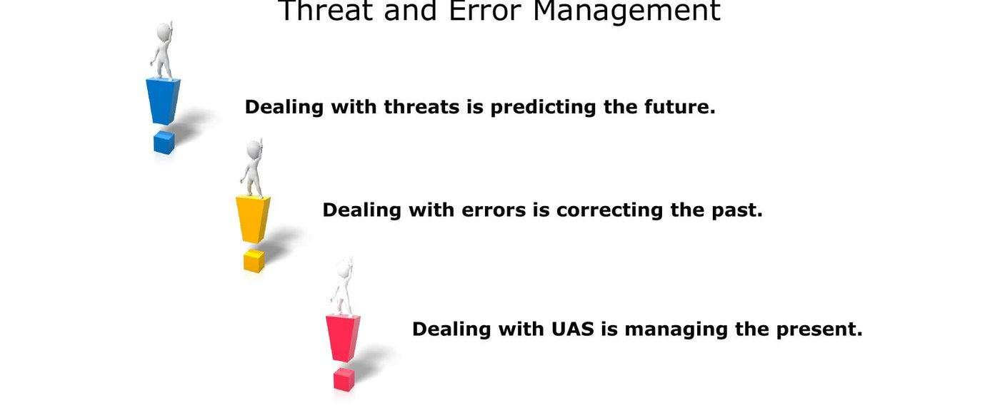

Lesson 06: Undesired Aircraft States and Outcomes
Learning objectives
- Define an undesired aircraft state (UAS).
- Distinguish a UAS from an outcome.
- Explain why the crew must switch from error management to UAS management.
Past, present, future.
Definition
Undesired aircraft states are "flight crew-induced aircraft position or speed deviations, misapplication of flight controls, or incorrect systems configuration, associated with a reduction in margins of safety". An upset caused by a sudden technical failure, with no crew contribution, is a threat, not a UAS.
Tap a card to turn it over.
UAS and outcome
A UAS is a transitional state: the crew can still recover and restore the margins. An outcome is an end state: back to safe operation, an additional error, or an incident/accident. Example: stabilised approach (normal) → unstable approach (UAS) → runway excursion (outcome).
Switch to UAS management
A crew selects a wrong approach in the FMC, sees it before the FAF, and both pilots start reprogramming. The aircraft goes through the localiser, descends late and becomes unstable. They were locked in error management. When the aircraft is in an undesired state, the first task is to fly the aircraft — basic modes or manual — and recover the state; fix the error later.

Practice: error or UAS?
Classify each situation: tap Threat, Error or Undesired aircraft state.
The approach is unstable at 500 ft: 15 kt fast and above the glide path.
Undesired aircraft state — Aircraft handling UAS — go around.
The crew forgets to arm the speedbrakes before landing.
Error — Procedural error — it becomes a UAS only if the configuration is wrong when it matters.
The aircraft lines up on a taxiway instead of the runway for take-off.
Undesired aircraft state — Ground navigation UAS — stop and verify.
Practice: error or UAS? (2)
Classify each situation: tap Threat, Error or Undesired aircraft state.
Flaps not set for take-off when starting the take-off roll.
Undesired aircraft state — Incorrect configuration UAS (the warning is a systemic countermeasure).
Severe turbulence suddenly rolls the aircraft past 45° of bank.
Threat — No crew contribution: a threat. A UAS appears only if the crew response creates the deviation.
Key takeaways
- UAS: crew-induced deviation or configuration reducing margins.
- UAS is transitional; an outcome is final.
- Fly the aircraft first: switch from error management to UAS management.
Knowledge check
An unstable approach is: